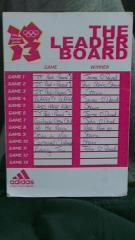

QUESTIONNAIRE - JT7
1. BEST DRINK
Jimbo – The little brown beers in the birthday pub in Dusseldorf – slipped down a treat (as long as you drunk them in 15 secs unless they were too warm!)
Shauny – Underberg. Anything served in brown paper bags that the locals turn their nose up at is good for me.
Johnny – Heidelberger – crisp and refreshing like the city
Steve – The Keg beers in Heidelberg! While arguably not the best beer, the pouring it ourselves was cool
RP – The little red fire cracker that made shauny bleed from his eyes
2. BEST MOMENT OF THE TOUR
Jimbo – If this was SAGA TOURS it would be the magical view from the castle in Heidelberg – but it’s not – its JIMBO TOURS – so, it has to be walking round Heidelberg spreading the good news about London 2012 (thanks to RP for getting ADIDAS involved!)
Shauny – Olympic Legacy Team. Shauny G holding court and delivering 24 carat bullshit to the unsuspecting Germans! "That's a fucking cool job man!" God bless you Seb.
Johnny – Finger spoof with the German football team
Steve – the 5 of us trying to convince the students of Heidelberg that we were from the Olympics
RP – I’m with Johnny on this one
3. WORST MOMENT OF THE TOUR
Jimbo – Duisburg – enough said (for a moment I nearly hung up my tour guide book and love of all things German)
Shauny – as bad as Duisburg was... It has to be setting my face on fire with the German red devil juice. It was god awful and put me out of action.
Johnny – Half hour walk in p!ssing rain from Dusseldorf Station but made all ok when we found out about Duisburg
Steve – Duisburg!!! James, that one is all on you!
RP – Seeing “all” of Johnny
4. WHAT DO YOU WISH YOU BROUGHT WITH YOU?
Jimbo – Ability to read train station signs!
Shauny - A to Z of Duisburg.
Johnny – Change of jeans – it wasn’t the warmest tour so the one pair I had got a lot of use
Steve – My Swimming Shorts!
RP – A finger spoof shot glass (other merchandise is available)
5. WHAT DO YOU WISH YOU LEFT BEHIND?
Jimbo – 2 jumpers and a pair of jeans (never packing pissed again)
Shauny - shoes. Trainers only from now on.
Johnny – 2nd book – no reading on the fun filled short tour
Steve – Nothing! I think I’ve this JT packing sorted!
RP – My bag (no need, no need)
6. FAVOURITE BOOZER
Jimbo – Gotta be the birthday pub in Dusseldorf – although there were some stonkers in Heidelberg.
Shauny – Busiest pub in Heidelberg. Gullible finger spoof loving locals make it
Shauny G's kind of establishment.
Johnny – Party bar in Heidelberg (Destille)
Steve - Have to go with the “Birthday pub”
RP - Party bar
7. BEST FRUIT (RP – I’ll explain!)
Jimbo – The student types in Heidelberg where great but gotta be the window shopping in Amsterdam. (If Fearon had come reckon he’d still be there now filling up his basket with juicy fruits)
Shauny - Got to be the Dutch melons. We all know its the forbidden fruit and that probably makes it more appealing... Unless your Stevie B of course.
Johnny – Heidelberg (Dusseldorf didn’t have a fair trial though to be fair)
Steve – Amsterdam!! No contest!
RP – I like Bananas
8. BEST NIGHT OUT
Jimbo - First night in Heidelberg – it had it all - a beer keg, a table of pig, Blankety Blanka, hauling Steve (12st my arse) over a bridge finished off with the popular German game of “How many people can you cram into a bar”.
Shauny - Heidelberg night 1. It was so good Shauny G turned down a Mc D's!
Johnny – 1st night in Heidelberg. RP got the party started and stopped any fatigue setting in early
Steve – Heidelberg Day 1
RP – 1st Night in Heidelberg, seeing JD set his own bets and delivering
9. QUOTE OF THE TOUR
Jimbo – After an hour of walking around the German Basildon “We are in F**king Dusseldorf aren’t we?!!”
Shauny – LADIIIIIEEEEESSSSSS
Johnny – I haven’t got leprosy (I wasn’t there to witness it but can see it clearly!)
Steve – “We are in fucking Dusseldorf!!!!! Aren’t we?!?!?!”
RP – “Hello Ladies”
10. WIERDEST PERSON WE MET
Jimbo – Australian bird who ran the hostel in Dam – funny eyes – plus she’s still got a fiver from the whip for a towel!
Shauny – Dusseldorf gobshite who had more ex gf's than a Jeremy Kyle cast list.
Johnny – The man shouting at me in the academic pub
Steve – The “ex-girlfriend” guy in the Birthday Bar
RP – That douche that we met in the birthday bar, who desperately wanted an ex girlfriend
11. FUNNIEST MOMENT
Jimbo - Shaun getting T-bagged – was laughing for a week after – brilliant!
Shauny – Stevie B walking in a "straight" line at the end of night 1 in Heidelberg.
Johnny – Jimbo carrying a ’12 stone’ Stevie B across the bridge
Steve – Shaun announcing that “if anyone was going to get T-bagged last night it was me!” a moment before he gets shown his T-bag picture
RP – Shaun tasting Johnny
12. FAVOURITE HOSTEL
Jimbo –“Heidelberg Cement Hoste” (funny name for a hostel but we all know what im talking about). Btw this “hostel” must never been mentioned in front of the other half’s!!
Shauny - Dusseldorf. Was decent hostel that plus I got a topless hug from Johnny... What a pleasure!
Johnny – Novotel in Heidelberg – big sleep!
Steve – Heidelberg Cement!
RP - “Heidelberg Cement Hoste” I could get used to JT
13. BEST FOOD
Jimbo – Plate of pig in Dusseldorf (love the way the waiter looked at us once and ordered for us – love Germany!)
Shauny - swine feast in Dusseldorf... What can I say... Meatiliscious, beers galore and a side of sauerkraut. Right touch.
Johnny – Plate of pig in Dusseldorf – best Jimbo Tour meal ever
Steve – Dusseldorf!
RP – Big Pig. Although the kebab on the walk home that night probably saved me.
**NEW FOR 2013** SUGGEST A MYSTERY GUEST FOR JT8?
Jimbo – A DOT KEILY – He’d Love it!
Shauny - GBudd - need to get deep and emotional one night... "I can't look... It's a car crash!"
Johnny – A Kiely is long overdue a visit but don’t know if he’d get it
Steve – Bruce!
RP – That guy from Amsterdam, we could ask him at the wedding?
BIG QUESTION - MAN OR BODY PART OF THE TOUR
Jimbo – Can’t believe I’m saying this be it has to be Stevie. Apart from putting Shaun to bed at 4am and being up for it all the time he also relinquished his first class seat on the train to sit with the masses in 2nd class, he also………phone rings….. Hello?...Oh Hi Steve…What? You’re not coming to my Stag at the Races?.......After knowing you all these years?......Fine!.............My Man of the tour is John – for T-Bagging Shaun.
Shauny - (Firstly Jimbo... That was world class!) Man of the tour for has to be our European leader. Top tour Jim... From fruity stage antics, to taking every RP game in your stride. You embodied the beliefs and ethics of the Olympic James.
Johnny – Jimbo nailed on. Took the ‘stag’ games in his stride and led from the front again (RP put in a good show but you can’t give it to a JT virgin)
Steve – I have to give it John!! Great T-bagging
RP – Jimbo, putting a body part into another man pales in comparison to carrying
Stevie B over that romantic bridge (soft focus moment)
PICK 1 JT STOP FOR 2013?
Jimbo – Monaco – if Shaun gets treated like a VIP I’d be a Top Boy out there.
Shauny - Kiev (same every year!)
Johnny – Stuttgart – it teased us this year and I reckon it has a lot to offer
Steve – Bucharest
RP – Long Beach (CA)
*************THE BIG ONE****************** OF ALL THE CITIES JT HAS VISITED WHICH ONE WOULD YOU RETURN TO FIRST AND WHY?
CITIES:JT1: Munich; Prague; Krakow. JT2: Bratislava; Vienna; Budapest; Berlin
JT3: Helsinki; Tallinn; Vilnius; Riga JT4: Ljubljana; Zagreb; Split; Ancona; Rome
JT5: Sofia; Varna. JT6: Colonge; Eindhoven
JT 7: Amsterdam, Dusseldorf, Heidelberg.
Jimbo – Munich – we only got up for it when our train was due to leave for Prague!
Shauney – Munich... Even though I've been back since I'd live there given the chance!
John – Munich – great 1st ever city but we were young and naive back then. Much more to see and they could give Dusseldorf a run for their money on the meat front
Steve – Munich! We left so much behind!
RP - Don’t think I can answer this one really, but Munich sounds like fun
Photographs
{kind=link}
